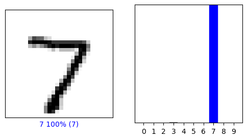
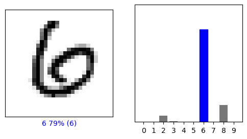
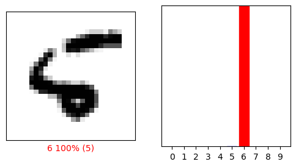

\(\newcommand{\bfg}{\mathbf{g}}\) \(\newcommand{\bfh}{\mathbf{h}}\) \(\newcommand{\bfk}{\mathbf{k}}\) \(\newcommand{\bgamma}{\boldsymbol{\gamma}}\) \(\newcommand{\bsigma}{\boldsymbol{\sigma}}\)
6.5. Backpropagation and neural networks#
We develop the basic mathematical foundations of automatic differentiation. We restrict ourselves to a special setting: multi-layer progressive functions. Many important classifiers take the form of a sequence of compositions where parameters are specific to each layer of composition. We show how to systematically apply the Chain Rule to such functions. We give examples in the next section.
Recall the notation for concatenation: for two vectors \(\mathbf{v}_1 \in \mathbb{R}^{a_1}\) and \(\mathbf{v}_2 \in \mathbb{R}^{a_2}\), the concatenation of \(\mathbf{v}_1\) and \(\mathbf{v}_2\) as a vector in \(\mathbb{R}^{a_1 + a_2}\) is denoted by
For example, if \(\mathbf{v}_1 = (1, 2)\) and \(\mathbf{v}_2 = (-1, -3, -5)\), then \((\mathbf{v}_1,\mathbf{v}_2) = (1, 2, -1, -3, -5)\). More generally, \((\mathbf{v}_1,\ldots,\mathbf{v}_i)\) is the concatenation of vectors \(\mathbf{v}_1,\ldots,\mathbf{v}_i\).
Recall that the vectorization \(\mathrm{vec}(A) \in \mathbb{R}^{nm}\) of a matrix \(A = (a_{i,j})_{i,j} \in \mathbb{R}^{n \times m}\) is the vector
6.5.1. Forward v. backward#
We begin with a fixed-parameter example to illustrate the issues. Suppose \(f : \mathbb{R}^d \to \mathbb{R}\) can be expressed as a composition of \(L+1\) vector-valued functions \(\bfg_i : \mathbb{R}^{n_i} \to \mathbb{R}^{n_{i+1}}\) and a real-valued function \(\ell : \mathbb{R}^{n_{L+1}} \to \mathbb{R}\) as follows
Here \(n_0 = d\) is the input dimension. We also let \(n_{L+1} = K\) be the output dimension. Think of
as a prediction function (i.e., a regression or classification function) and think of \(\ell\) as a loss function.
Observe first that the function \(f\) itself is straighforward to compute recursively starting from the inside as follows:
Anticipating the setting of neural networks, our main application of interest, we refer to \(\mathbf{z}_0 = \mathbf{x}\) as the “input layer”, \(\hat{\mathbf{y}} = \mathbf{z}_{L+1} = \bfg_{L}(\mathbf{z}_{L})\) as the “output layer”, and \(\mathbf{z}_{1} = \bfg_0(\mathbf{z}_0), \ldots, \mathbf{z}_L = \bfg_{L-1}(\mathbf{z}_{L-1})\) as the “hidden layers”. In particular, \(L\) is the number of hidden layers.
EXAMPLE: We will use the following running example throughout this subsection. We assume that each \(\bfg_i\) is a linear map, that is, \(\bfg_i(\mathbf{z}_i) = \mathcal{W}_{i} \mathbf{z}_i\) where \(\mathcal{W}_{i} \in \mathbb{R}^{n_{i+1} \times n_i}\) is a fixed, known matrix. Assume also that \(\ell : \mathbb{R}^K \to \mathbb{R}\) is defined as
for a fixed, known vector \(\mathbf{y} \in \mathbb{R}^{K}\).
Computing \(f\) recursively starting from the inside as above gives here
In essence, we are comparing an observed outcome \(\mathbf{y}\) to a prediction \(\mathcal{W}_{L} \mathcal{W}_{L-1} \cdots \mathcal{W}_{1} \mathcal{W}_{0} \mathbf{x}\) based on input \(\mathbf{x}\).
In this section, we look into computing the gradient with respect to \(\mathbf{x}\). (In reality, we will be more interested in taking the gradient with respect to the parameters, i.e., the entries of the matrices \(\mathcal{W}_{0}, \ldots, \mathcal{W}_{L}\), a task to which we will come back later in this section. We will also be interested in more complex – in particular, non-linear – prediction functions.)
To make things more concrete, we consider a specific example. We will use torch.linalg.vector_norm to compute the Euclidean norm in PyTorch. Suppose \(d=3\), \(L=1\), \(n_1 = 2\), and \(K = 2\) with the following choices:
x = torch.tensor([1.,0.,-1.], requires_grad=True)
y = torch.tensor([0.,1.])
W0 = torch.tensor([[0.,1.,-1.],[2.,0.,1.]])
W1 = torch.tensor([[-1.,0.],[2.,-1.]])
z0 = x
z1 = W0 @ z0
z2 = W1 @ z1
f = 0.5 * (torch.linalg.vector_norm(y-z2) ** 2)
Show code cell source
print('z0 =',z0)
print('z1 =',z1)
print('z2 =',z2)
print('f =',f)
z0 = tensor([ 1., 0., -1.], requires_grad=True)
z1 = tensor([1., 1.], grad_fn=<MvBackward0>)
z2 = tensor([-1., 1.], grad_fn=<MvBackward0>)
f = tensor(0.5000, grad_fn=<MulBackward0>)
\(\lhd\)
Forward mode We are ready to apply the Chain Rule
where the \(\mathbf{z}_{i}\)s are as above and we used that \(\mathbf{z}_0 = \mathbf{x}\). The matrix product here is well-defined. Indeed, the size of \(J_{g_i}(\mathbf{z}_i)\) is \(n_{i+1} \times n_{i}\) (i.e., number of outputs by number of inputs) while the size of \(J_{g_{i-1}}(\mathbf{z}_{i-1})\) is \(n_{i} \times n_{i-1}\) – so the dimensions are compatible.
So it is straighforward to compute \(\nabla f(\mathbf{x})^T\) recursively as we did for \(f\) itself. In fact, we can compute both simultaneously. This is called the forward mode:
EXAMPLE: (continued) We apply this procedure to the running example. The Jacobian of the linear map \(\bfg_i(\mathbf{z}_i) = \mathcal{W}_{i} \mathbf{z}_i\) is the matrix \(\mathcal{W}_{i}\), as we have seen in a previous example. That is, \(J_{\bfg_i}(\mathbf{z}_i) = \mathcal{W}_{i}\) for any \(\mathbf{z}_i\). To compute the Jacobian of \(\ell\), we rewrite it as a quadratic function
From a previous example,
Putting it all together, we get
We return to our concrete example.
with torch.no_grad():
F0 = W0
F1 = W1 @ F0
grad_f = (z2 - y).T @ F1
Show code cell source
print('F0 =', F0)
print('F1 =', F1)
print('grad_f =', grad_f)
F0 = tensor([[ 0., 1., -1.],
[ 2., 0., 1.]])
F1 = tensor([[ 0., -1., 1.],
[-2., 2., -3.]])
grad_f = tensor([ 0., 1., -1.])
We can check that we get the same outcome using AD.
f.backward()
Show code cell source
print('x.grad =', x.grad)
x.grad = tensor([ 0., 1., -1.])
\(\lhd\)
THINK-PAIR-SHARE: Obtain that last expression directly by taking the gradient of
\(\ddagger\)
Reverse mode What we just described corresponds to performing the matrix products in the Chain Rule formula
from right to left. But there is another way to do this – from left to right! This is called reverse mode. First we compute \(f\) recursively as we did previously, in particular we compute the \(\mathbf{z}_i\)s, then going backwards we compute
This may seem like a rather minor modification to our previous algorithm. It is not – it is much faster! To see this, we need to count the number of elementary operations involved in implementing each mode.
First a simple calcultion: How many elementary operations (i.e., additions and multiplications) does it take to multiply an \(n \times m\) matrix \(A = (a_{ij})_{i,j}\) and an \(m \times \ell\) matrix \(B= (b_{ij})_{i,j}\)? Let’s ask ChatGPT.
Here’s the answer:
“To calculate the number of elementary operations required to multiply an \(n \times m\) matrix by an \(m \times \ell\) matrix, consider the computation involved for each element of the resulting \(n \times \ell\) matrix.
Each element of the resulting matrix is the dot product of a row from the first matrix and a column from the second matrix. If the first matrix is denoted as \(A\) and the second matrix as \(B\), then the element at position \(i, j\) in the resulting matrix \(C\) is calculated as:
This computation involves \(m\) multiplications and \(m - 1\) additions, making a total of \(m + (m - 1) = 2m - 1\) elementary operations for each element.
Since matrix \(C\) has \(n \times \ell\) elements, the total number of elementary operations required for the entire matrix \(C\) is:
Thus, multiplying an \(n \times m\) matrix by an \(m \times \ell\) matrix takes \(2nm\ell - n\ell\) elementary operations.”
Returning to computing the gradient, we count the number of elementary operations needed for each mode. To simplify the calculation, we assume that \(n_0 = d\) and \(n_1 = n_2 = \cdots = n_{L} = m\) and \(n_{L+1} = K\).
Forward: The matrix \(F_0 = J_{\bfg_0}(\mathbf{z}_0)\) has dimensions \(m \times d\). The matrix \(F_1\), as a product of \(J_{\bfg_1}(\mathbf{z}_1) \in \mathbb{R}^{m \times m}\) and \(F_0 \in \mathbb{R}^{m \times d}\) has dimensions \(m \times d\); it therefore takes \(m (2m-1) d\) operations to compute. The same holds for \(F_2, \ldots, F_{L-1}\) (check it!). By similar considerations, the matrix \(F_L\) has dimensions \(K \times d\) and takes \(K (2m-1) d\) operations to compute. Finally, \(\nabla f(\mathbf{x})^T = J_{\ell}(\mathbf{z}_{L+1}) F_L \in \mathbb{R}^{1 \times d}\) and takes \((2K-1) d\) operations to compute. Overall the number of operations is
This is approximately \(2 L m^2 d\) if we think of \(K\) as a small constant and ignore the smaller order terms.
Reverse: The matrix \(G_{L+1} = J_{\ell}(\mathbf{z}_{L+1})\) has dimensions \(1 \times K\). The matrix \(G_{L}\), as a product of \(G_{L+1} \in \mathbb{R}^{1 \times K}\) and \(J_{g_{L}}(\mathbf{z}_{L}) \in \mathbb{R}^{K \times m}\) has dimensions \(1 \times m\); it therefore takes \((2K-1) m\) operations to compute. The matrix \(G_{L-1}\), as a product of \(G_{L} \in \mathbb{R}^{1 \times m}\) and \(J_{g_{L-1}}(\mathbf{z}_{L-1}) \in \mathbb{R}^{m \times m}\) has dimensions \(1 \times m\); it therefore takes \((2m-1) m\) operations to compute. The same holds for \(G_{L-2}, \ldots, G_{1}\) (check it!). By similar considerations, \(\nabla f(\mathbf{x})^T = G_1 \, J_{\bfg_0}(\mathbf{z}_0) \in \mathbb{R}^{1 \times d}\) and takes \((2m-1) d\) operations to compute. Overall the number of operations is
This is approximately \(2 L m^2 + 2 m d\) – which can be much smaller than \(2 L m^2 d\)! In other words, the reverse mode approach can be much faster. Note in particular that all computations in the reverse mode are matrix-vector products (or more precisely row vector-matrix products) rather than matrix-matrix products.
EXAMPLE: (continued) We apply the reverse mode approach to our previous example. We get
which matches our previous calculation. Note that all computations involve multiplying a row vector by a matrix.
We try our specific example.
with torch.no_grad():
G2 = (z2 - y).T
G1 = G2 @ W1
grad_f = G1 @ W0
Show code cell source
print('G2 =', G2)
print('G1 =', G1)
print('grad_f =', grad_f)
G2 = tensor([-1., 0.])
G1 = tensor([1., 0.])
grad_f = tensor([ 0., 1., -1.])
We indeed obtain the same answer yet again.
\(\lhd\)
To provide a little more insight in the savings obtained through the reverse mode, consider the following simple calculations. Let \(A, B \in \mathbb{R}^{n \times n}\) and \(\mathbf{v} \in \mathbb{R}^n\). Suppose we seek to compute \(\mathbf{v}^T B A\). By associativity of matrix multiplication, there are two ways of doing this: compute \(\mathbf{v}^T (BA) \) (i.e., first compute \(BA\) then multiply by \(\mathbf{v}^T\); or compute \((\mathbf{v}^T B) A\). The first approach requires \(n^2(2n-1) + n(2n-1)\) operations, while the second only requires \(2n(2n-1)\). The latter is much smaller since \(2 n^3\) (the leading term in the first approach) grows much faster than \(4 n^2\) (the leading term in the second approach) when \(n\) is large.
Why is this happening? One way to understand this is to think of the output \(\mathbf{v}^T B A\) as a linear combination of the rows of \(A\) – a very specific linear combination in fact. In the first approach, we compute \(BA\) which gives us \(n\) different linear combinations of the rows of \(A\) – none being the one we want – and then we compute the desired linear combination by multiplying by \(\mathbf{v}^T\). This is wasteful. In the second approach, we immediately compute the coefficients of the specific linear combination we seek – \(\mathbf{v}^T B\) – and then we compute that linear combination by multiplying to the right by \(A\).
While the setting we examined in this subsection is illuminating, it is not exactly what we want. In the machine learning context, each “layer” \(\bfg_i\) has parameters (in our running example, there were the entries of \(\mathcal{W}_{i}\)) and we seek to optimize with respect to those parameters. For this, we need the gradient with respect to the parameters, not the input \(\mathbf{x}\). In the next subsection, we consider a generalization of the current setting, progressive functions, which will allow us to do this. The notation gets more complicated, but the basic idea remains the same.
6.5.2. Progressive functions#
As mentioned previously, while it may seem natural to define a prediction function \(h\) (e.g., a classifier) as a function of the input data \(\mathbf{x}\in \mathbb{R}^{d}\), when fitting data we are ultimately interested in thinking of \(h\) as a function of the parameters \(\mathbf{w} \in \mathbb{R}^r\) that need to be adjusted – over a fixed dataset. Hence, in this section, the input \(\mathbf{x}\) is fixed while the vector of parameters \(\mathbf{w}\) is now variable.
A first example We use the example from the previous subsection to illustrate the main ideas. That is, suppose \(d=3\), \(L=1\), \(n_1 = 2\), and \(K = 2\). Fix a data sample \(\mathbf{x} = (x_1,x_2,x_3) \in \mathbb{R}^3, \mathbf{y} = (y_1, y_2) \in \mathbb{R}^2\). For \(i=0, 1\), we use the notation
and let
We change the notation for the “layer” function \(\bfg_i\) to reflect the fact that it is now a function of two (concatenated) vectors: the input \(\mathbf{z}_i = (z_{i,1},\ldots,z_{i,n_i})\) from the previous layer and a layer-specific set of parameters \(\mathbf{w}_i\). That is,
with \(\mathbf{w}_i = (\mathbf{w}_i^{(1)}, \mathbf{w}_i^{(2)})\), the concatenation of the rows of \(\mathcal{W}_{i}\) (as column vectors). A different way to put this is that
where we took the transpose to turn the rows into columns. More specifically,
(i.e., \(\mathbf{w}_0^{(1)} = (w_0, w_1, w_2)\) and \(\mathbf{w}_0^{(2)} = (w_3, w_4, w_5)\)) and
(i.e., \(\mathbf{w}_1^{(1)} = (w_6, w_7)\) and \(\mathbf{w}_1^{(2)} = (w_8, w_9)\)).
We seek to compute the gradient of
by applying the Chain Rule backwards, as we justified in the previous subsection – but this time we take the gradient with respect to the parameters
Notice a key change in the notation: we now accordingly think of \(f\) as a function of \(\mathbf{w}\); the role of \(\mathbf{x}\) is implicit.
On the other hand, it may seem counter-intuitive that we now think of \(\bfg_i\) as a function of both its own parameters and its inputs from the previous layer when we just stated that we only care about the gradient with respect to the former. But, as we will see, it turns out that we need the Jacobians with respect to both as the input from the previous layer actually depends on the parameters of the previous layers. For instance, \(\bfg_1(\mathbf{z}_1, \mathbf{w}_1) = \mathcal{W}_{1} \mathbf{z}_{1}\) where \(\mathbf{z}_{1} = \bfg_0(\mathbf{z}_0, \mathbf{w}_0) = \mathcal{W}_{0} \mathbf{z}_{0}\).
Recall that we have already computed the requisite Jacobians \(J_{\bfg_0}\) and \(J_{\bfg_1}\) in a previous example. We have also computed the Jacobian \(J_{\ell}\) of \(\ell\). At this point, it is tempting to apply the Chain Rule and deduce that the gradient of \(f\) is
But this is not correct. For one, the dimensions do not match! For instance, \(J_{\bfg_0} \in \mathbb{R}^{2 \times 9}\) since \(\bfg_0\) has \(2\) outputs and \(9\) inputs (i.e., \(z_{0,1}, z_{0,2}, z_{0,3}, w_0, w_1, w_2, w_3, w_4, w_5\)) while \(J_{\bfg_1} \in \mathbb{R}^{2 \times 6}\) since \(\bfg_1\) has \(2\) outputs and \(6\) inputs (i.e., \(z_{1,1}, z_{1,2}, w_6, w_7, w_8, w_9\)). So what went wrong?
The function \(f\) is not in fact a straight composition of the functions \(\ell\), \(\bfg_1\), and \(\bfg_0\). Indeed the parameters to differentiate with respect to are introduced progressively, each layer injecting its own additional parameters which are not obtained from the previous layers. Hence we cannot write the gradient of \(f\) as a simple product the Jacobians, unlike what happend in the previous subsection.
But not all is lost. We show below that we can still apply the Chain Rule step-by-step in a way that accounts for the additional parameters on each layer. Taking a hint from the previous subsection, we proceed forward first to compute \(f\) and the Jacobians, and then go backwards to compute the gradient \(\nabla f\). We use the notation \(\mathbb{A}_{n}[\mathbf{x}]\) and \(\mathbb{B}_{n}[\mathbf{z}]\) from the background section.
In the forward phase, we compute \(f\) itself and the requisite Jacobians:
We now compute the gradient of \(\mathbf{f}\) with respect to \(\mathbf{w}\). We start with \(\mathbf{w}_1 = (w_6, w_7, w_8, w_9)\). For this step, we think of \(f\) as the composition \(\ell(\bfg_1(\mathbf{z}_1, \mathbf{w}_1))\). Here \(\mathbf{z}_1\) does not depend on \(\mathbf{w}_1\) and therefore can be considered fixed for this calculation. By the Chain Rule
where we used the fact that \(g_{1,2}(\mathbf{z}_1, \mathbf{w}_1) = w_8 z_{1,1} + w_9 z_{1,2}\) does not depend on \(w_6\) and therefore \(\frac{\partial g_{1,2}(\mathbf{z}_1, \mathbf{w}_1)}{\partial w_6} = 0\). Similarly
In matrix form, this is
where we used Properties of the Kronecker Product (f) on the second to last line.
To compute the partial derivatives with respect to \(\mathbf{w}_0 = (w_0, w_1, \ldots, w_5)\), we first need to compute partial derivatives with respect to \(\mathbf{z}_1 = (z_{1,1}, z_{1,2})\) since \(f\) depends on \(\mathbf{w}_0\) through it. For this calculation, we think again of \(f\) as the composition \(\ell(\bfg_1(\mathbf{z}_1, \mathbf{w}_1))\), but this time our focus is on the variables \(\mathbf{z}_1\). We obtain
and
In matrix form, this is
The vector \(\left(\frac{\partial f(\mathbf{w})}{\partial z_{1,1}}, \frac{\partial f(\mathbf{w})}{\partial z_{1,2}}\right)\) is called an adjoint.
We now compute the gradient of \(\mathbf{f}\) with respect to \(\mathbf{w}_0 = (w_0, w_1, \ldots, w_5)\). For this step, we think of \(f\) as the composition of \(\ell(\bfg_1(\mathbf{z}_1, \mathbf{w}_1))\) as a function of \(\mathbf{z}_1\) and \(\bfg_0(\mathbf{z}_0, \mathbf{w}_0)\) as a function of \(\mathbf{w}_0\). Here \(\mathbf{z}_0\) does not depend on \(\mathbf{w}_0\) and therefore can be considered fixed for this calculation. By the Chain Rule
where we used the fact that \(g_{0,2}(\mathbf{z}_0, \mathbf{w}_0) = w_3 z_{0,1} + w_4 z_{0,2} + w_5 z_{0,3}\) does not depend on \(w_0\) and therefore \(\frac{\partial g_{0,2}(\mathbf{z}_0, \mathbf{w}_0)}{\partial w_0} = 0\).
Similarly (check it!)
In matrix form, this is
where we used Properties of the Kronecker Product (f) on the second to last line.
To sum up,
NUMERICAL CORNER: We return to the concrete example from the previous subsection. This time the matrices W0 and W1 require partial derivatives.
x = torch.tensor([1.,0.,-1.])
y = torch.tensor([0.,1.])
W0 = torch.tensor([[0.,1.,-1.],[2.,0.,1.]], requires_grad=True)
W1 = torch.tensor([[-1.,0.],[2.,-1.]], requires_grad=True)
z0 = x
z1 = W0 @ z0
z2 = W1 @ z1
f = 0.5 * (torch.linalg.vector_norm(y-z2) ** 2)
Show code cell source
print('z0 =',z0)
print('z1 =',z1)
print('z2 =',z2)
print('f =',f)
z0 = tensor([ 1., 0., -1.])
z1 = tensor([1., 1.], grad_fn=<MvBackward0>)
z2 = tensor([-1., 1.], grad_fn=<MvBackward0>)
f = tensor(0.5000, grad_fn=<MulBackward0>)
We compute the gradient \(\nabla f(\mathbf{w})\) using AD.
f.backward()
Show code cell source
print('W0.grad =', W0.grad)
W0.grad = tensor([[ 1., 0., -1.],
[ 0., 0., -0.]])
Show code cell source
print('W1.grad =', W1.grad)
W1.grad = tensor([[-1., -1.],
[-0., -0.]])
These are written in the form of matrix derivatives
We use our formulas to confirm that they match these results. We need the Kronecker product, which in PyTorch is implemented as torch.kron.
with torch.no_grad():
grad_W0 = torch.kron((z2 - y).T @ W1, z0.T)
grad_W1 = torch.kron((z2 - y).T, z1.T)
Show code cell source
print('grad_W0 =', grad_W0)
print('grad_W1 =', grad_W1)
grad_W0 = tensor([ 1., 0., -1., 0., 0., -0.])
grad_W1 = tensor([-1., -1., 0., 0.])
Observe that this time these results are written in vectorized form (i.e., obtained by concatenating the rows). But they do match with the AD output. \(\unlhd\)
General setting More generally, we have \(L+2\) layers. The input layer is \(\mathbf{z}_0 := \mathbf{x}\), which we refer to as layer \(0\). Hidden layer \(i\), \(i=1,\ldots,L\), is defined by a continuously differentiable function \(\mathbf{z}_i := \bfg_{i-1}(\mathbf{z}_{i-1}, \mathbf{w}_{i-1})\) which this time takes two vector-valued inputs: a vector \(\mathbf{z}_{i-1} \in \mathbb{R}^{n_{i-1}}\) fed from the \((i-1)\)-st layer and a vector \(\mathbf{w}_{i-1} \in \mathbb{R}^{r_{i-1}}\) of parameters specific to the \(i\)-th layer
The output \(\mathbf{z}_i\) of \(\bfg_{i-1}\) is a vector in \(\mathbb{R}^{n_{i}}\) which is passed to the \((i+1)\)-st layer as input. The output layer is \(\mathbf{z}_{L+1} := \bfg_{L}(\mathbf{z}_{L}, \mathbf{w}_{L})\), which we also refer to as layer \(L+1\).
For \(i = 1,\ldots,L+1\), let
be the concatenation of the parameters from the first \(i\) layers (not including the input layer, which does not have parameters) as a vector in \(\mathbb{R}^{r_0+r_1+\cdots+r_{i-1}}\). Then the output of layer \(i\) as a function of the parameters is the composition
for \(i = 2, \ldots, L+1\). When \(i=1\), we have simply
Observe that the function \(\mathcal{O}_{i-1}\) depends implicitly on the input \(\mathbf{x}\) – which we do not think of as a variable in this setting. To simplify the notation, we do not make the dependence on \(\mathbf{x}\) explicit.
Letting \(\mathbf{w} := \overline{\mathbf{w}}^{L}\), the final output is
Expanding out the composition, this can be written alternatively as
Again, we do not make the dependence on \(\mathbf{x}\) explicit.
As a final step, we have a loss function \(\ell : \mathbb{R}^{n_{L+1}} \to \mathbb{R}\) which takes as input the output of the last layer and measures the fit to the given label \(\mathbf{y} \in \Delta_K\). We will see some example below. The final function is then
We seek to compute the gradient of \(f(\mathbf{w})\) with respect to the parameters \(\mathbf{w}\) in order to apply a gradient descent method.
EXAMPLE: (continued) We return to the running example from the previous subsection. That is, \(\bfg_i(\mathbf{z}_i, \mathbf{w}_i) = \mathcal{W}_{i} \mathbf{z}_i\) where the entries of \(\mathcal{W}_{i} \in \mathbb{R}^{n_{i+1} \times n_i}\) are considered parameters and we let \(\mathbf{w}_i = \mathrm{vec}(\mathcal{W}_{i}^T)\). Assume also that \(\ell : \mathbb{R}^K \to \mathbb{R}\) is defined as
for a fixed, known vector \(\mathbf{y} \in \mathbb{R}^{K}\).
Computing \(f\) recursively gives
\(\lhd\)
Applying the chain rule Recall that the key insight from the Chain Rule is that to compute the gradient of a composition such as \(\bfh(\mathbf{w})\) – no matter how complex – it suffices to separately compute the Jacobians of the intervening functions and then take matrix products. In this section, we compute the necessary Jacobians in the progressive case.
It will be convenient to re-write the basic composition step as
where the input to layer \(i+1\) (both layer-specific parameters and the output of the previous layer) is
for \(i = 1, \ldots, L\). When \(i=0\), we have simply
Applying the Chain Rule we get
First, the Jacobian of
has a simple block diagonal structure
since the first block component of \(\mathcal{I}_{i}\), \(\mathcal{O}_{i-1}(\overline{\mathbf{w}}^{i-1})\), does not depend on \(\mathbf{w}_i\) whereas the second block component of \(\mathcal{I}_{i}\), \(\mathbf{w}_i\), does not depend on \(\overline{\mathbf{w}}^{i-1}\). Observe that this is a fairly large matrix whose number of columns in particular grows with \(i\). That last formula is for \(i \geq 1\). When \(i=0\) we have \(\mathcal{I}_{0}(\overline{\mathbf{w}}^{0}) = \left(\mathbf{x}, \mathbf{w}_0\right)\), so that
We partition the Jacobian of \(\bfg_i(\mathbf{z}_i, \mathbf{w}_i)\) likewise, that is, we divide it into those columns corresponding to partial derivatives with respect to \(\mathbf{z}_{i}\) (the corresponding block being denoted by \(A_i\)) and with respect to \(\mathbf{w}_i\) (the corresponding block being denoted by \(B_i\))
evaluated at \((\mathbf{z}_i, \mathbf{w}_i) = \mathcal{I}_{i}(\overline{\mathbf{w}}^{i}) = (\mathcal{O}_{i-1}(\overline{\mathbf{w}}^{i-1}), \mathbf{w}_i)\). Note that \(A_i\) and \(B_i\) depend on the details of the function \(\bfg_i\), which typically is fairly simple. We give examples in the next subsections.
Plugging back above we get
This leads to the recursion
from which the Jacobian of \(\mathbf{h}(\mathbf{w})\) can be computed. Like \(J_{\mathcal{I}_{i}}\), \(J_{\mathcal{O}_{i}}\) is a large matrix. We refer to this matrix equation as the fundamental recursion.
The base case \(i=0\) is
Finally, using the Chain Rule again
The matrix \(J_{\mathcal{O}_{L}}(\overline{\mathbf{w}}^{L})\) is computed using the recursion above, while \(\nabla {\ell}\) depends on the function \(\ell\).
Backpropagation We take advantage of the fundamental recursion to compute the gradient of \(\bfh\). As we have seen, there are two ways of doing this. Applying the recursion directly is one of them, but it requires many matrix-matrix products. The first few steps are
and so on.
Instead, as in the case of differentiating with respect to the input \(\mathbf{x}\), one can also run the recursion backwards. The latter approach can be much faster because, as we detail next, it involves only matrix-vector products. Start from the end, that is, with the equation
Note that \(\nabla {\ell}(\bfh(\mathbf{w}))\) is a vector – not a matrix. Then expand the matrix \(J_{\bfh}(\mathbf{w})\) using the recursion above
The key is that both expressions \(A_L^T \,\nabla {\ell}(\bfh(\mathbf{w}))\) and \(B_L^T \,\nabla {\ell}(\bfh(\mathbf{w}))\) are matrix-vector products. That pattern persists at the next level of recursion. Note that this supposes that we have precomputed \(\bfh(\mathbf{w})\) first.
At the next level, we expand the matrix \(J_{\mathcal{O}_{L-1}}(\overline{\mathbf{w}}^{L-1})^T\) using the fundamental recursion
Continuing by induction gives an alternative formula for the gradient of \(f\).
Indeed, the next level gives
and so on. Observe that we do not in fact need to compute the large matrices \(J_{\mathcal{O}_{i}}\) – only the sequence of vectors \(B_L^T \,\nabla {\ell}(\bfh(\mathbf{w}))\), \(B_{L-1}^T \left\{ A_L^T \,\nabla {\ell}(\bfh(\mathbf{w}))\right\}\), \(B_{L-2}^T \left\{A_{L-1}^T \left\{ A_L^T \,\nabla {\ell}(\bfh(\mathbf{w}))\right\}\right\}, \)etc.
These formulas may seem cumbersome, but they take an intuitive form. Matrix \(A_i\) is the submatrix of the Jacobian \(J_{\bfg_i}\) corresponding only to the partial derivatives with respect to \(\mathbf{z}_i\), i.e., the input from the previous layer. Matrix \(B_i\) is the submatrix of the Jacobian \(J_{\bfg_i}\) corresponding only to the partial derivatives with respect to \(\mathbf{w}_i\), i.e., the layer-specific parameters. To compute the subvector of \(\nabla f\) corresponding to the parameters \(\mathbf{w}_i\) of the \((i+1)\)-th layer, we repeatedly differentiate with respect to the inputs of the previous layer (by multiplying by the corresponding \(A_j^T\)) starting from the last one, until we reach layer \(i+1\) at which point we take partial derivatives with respect to the layer-specific parameters (by multiplying by \(B_i^T\)). The process stops there since the layers preceding it do not depend on \(\mathbf{w}_i\) and therefore its full effect on \(f\) has been accounted for.
In other words, we need to compute
and
then
and
then
and
and so on. The \(\mathbf{p}_i\)s are referred to as adjoints; they correspond to the vectors of partial derivatives of \(f\) with respect to the \(\mathbf{z}_i\)s.
There is one more detail to note. The matrices \(A_i, B_i\) depend on the output of layer \(i-1\). To compute them, we first proceed forward, that is, we let \(\mathbf{z}_0 = \mathbf{x}\) then
and so on. In that forward pass, we also compute \(A_i, B_i\) along the way.
We give the full algorithm now, which involves two passes. In the forward pass, or forward propagation step, we compute the following.
Initialization:
Forward layer loop: For \(i = 0, 1,\ldots,L\),
Loss:
In the backward pass, or backpropagation step, we compute the following.
Backward layer loop: For \(i = L,\ldots,1, 0\),
Output:
Note that we do not in fact need to compute \(A_0\) and \(\mathbf{p}_0\).
EXAMPLE: (continued) We apply the algorithm to our running example. From previous calculations, for \(i = 0, 1,\ldots,L\), the Jacobians are
and
Using the Properties of the Kronecker Product, we obtain
and so on. Following the pattern, the last step is
These calculations are consistent with the case \(L=1\) that we derived previously (check it!). \(\lhd\)
Stochastic gradient descent Having shown how to compute the gradient, we can now apply gradient descent to fit the data.
To get the full gradient, we now consider \(n\) samples \((\mathbf{x}_i,y_i)\), \(i=1,\ldots,n\). At this point, we make the dependence on \((\mathbf{x}_i, y_i)\) explicit. The loss function can be taken as the average of the individual sample contributions, so the gradient is obtained by linearity
where each term can be computed separately by the procedure above.
We can then apply gradient decent. We start from an arbitrary \(\mathbf{w}^{0}\) and update as follows
In stochastic gradient descent (SGD), a variant of gradient descent, we pick a sample \(I_t\) uniformly at random in \(\{1,\ldots,n\}\) and update as follows
More generally, in the so-called mini-batch version of SGD, we pick instead a uniformly random sub-sample \(\mathcal{B}_t \subseteq \{1,\ldots,n\}\) of size \(b\) without replacement (i.e., all sub-samples of that size have the same probability of being picked)
The key observation about the two stochastic updates above is that, in expectation, they perform a step of gradient descent. That turns out to be enough and it has computational advantages.
LEMMA (Expected SGD Step) Fix a batch size \(1 \leq b \leq n\) and and an arbitrary vector of parameters \(\mathbf{w}\). Let \(\mathcal{B} \subseteq \{1,\ldots,n\}\) be a uniformly random sub-sample of size \(b\). Then
\(\flat\)
Proof: Because \(\mathcal{B}\) is picked uniformly at random (without replacement), for any sub-sample \(B \subseteq \{1,\ldots,n\}\) of size \(b\) without repeats
So, so summing over all such sub-samples, we obtain
Computing the internal sum requires a combinatorial argument. Indeed, \(\sum_{B \subseteq \{1,\ldots,n\}} \mathbf{1}\{i \in B\}\) counts the number of ways that \(i\) can be picked in a sub-sample of size \(b\) without repeats. That is \(\binom{n-1}{b-1}\), which is the number of ways of picking the remaining \(b-1\) elements of \(B\) from the other \(n-1\) possible elements. By definition of the binomial coefficient and the properties of factorials,
Plugging back gives the claim. \(\square\)
LEARNING BY CHATTING: Via ChatGPT, in the words of Yoda (in case that helps you), the overall algorithm can be summarized as follows:
Backward, the path of learning must go. Begin at the end, we do. At the output layer of the network, error we find. How much wrong the answers are, it shows. Calculate we must, the difference between what expected we were and what received we have.
Propagate this error back, we shall, through each layer preceding. Update each weight we must, according to its contribution to the error. Small adjustments to the weights, guided by the Force of the gradient, and the learning rate, it is.
Learn from mistakes, the network does. Adjust it must, until right, the outputs are. Repeat this process we will, layer by layer, neuron by neuron, until learned enough, the network has. Train it does, iterate it must, learn it shall.
This, the way of backpropagation is. Simple, yet profound.
6.5.3. Example 1: Linear regression#
We will give several concrete examples of progressive functions and of the application of the algorithmic differentiation method in this section and the next ones. We begin with a straighforward example: linear regression.
Computing the gradient While we have motivated the framework introduced in the previous section from the point of view of classification, it also immediately applies to the regression setting. Both classification and regression are instances of supervised learning.
We first compute the gradient of a single sample. Here \(\mathbf{x} \in \mathbb{R}^d\) again, but \(y\) is a real-valued outcome variable. We revisit the case of linear regression where the loss function is
and the regression function only has input and output layers and no hidden layer (that is, \(L=0\)) with
where \(\mathbf{w} \in \mathbb{R}^{d}\) are the parameters. Recall that we can include a constant term (one that does not depend on the input) by adding a \(1\) to the input. To keep the notation simple, we assume that this pre-processing has already been performed if desired.
Finally, the objective function for a single sample is
Using the notation from the previous subsection, the forward pass in this case is:
Initialization:
Forward layer loop:
where \(\mathbf{w}_0 := \mathbf{w}\).
Loss:
The backward pass is:
Backward layer loop:
Output:
As we noted before, there is in fact no need to compute \(A_0\) and \(\mathbf{p}_0\).
The Advertising dataset and the least-squares solution We return to the Advertising dataset.
df = pd.read_csv('advertising.csv')
df.head()
| Unnamed: 0 | TV | radio | newspaper | sales | |
|---|---|---|---|---|---|
| 0 | 1 | 230.1 | 37.8 | 69.2 | 22.1 |
| 1 | 2 | 44.5 | 39.3 | 45.1 | 10.4 |
| 2 | 3 | 17.2 | 45.9 | 69.3 | 9.3 |
| 3 | 4 | 151.5 | 41.3 | 58.5 | 18.5 |
| 4 | 5 | 180.8 | 10.8 | 58.4 | 12.9 |
n = len(df.index)
print(n)
200
We first compute the solution using the least-squares approach we detailed previously. We use numpy.column_stack to add a column of ones to the feature vectors.
TV = df['TV'].to_numpy()
radio = df['radio'].to_numpy()
newspaper = df['newspaper'].to_numpy()
sales = df['sales'].to_numpy()
features = np.stack((TV, radio, newspaper), axis=-1)
A = np.column_stack((np.ones(n), features))
coeff = mmids.ls_by_qr(A, sales)
print(coeff)
[ 2.93888937e+00 4.57646455e-02 1.88530017e-01 -1.03749304e-03]
The MSE is:
np.mean((A @ coeff - sales)**2)
2.7841263145109365
Solving the problem using PyTorch We will be using PyTorch to implement the previous method. We first convert the data into PyTorch tensors. We then use torch.utils.data.TensorDataset to create the dataset. Finally, torch.utils.data.DataLoader provides the utilities to load the data in batches for training. We take mini-batches of size BATCH_SIZE = 64 and we apply a random permutation of the samples on every pass (with the option shuffle=True).
from torch.utils.data import DataLoader, TensorDataset
import torch.nn as nn
import torch.optim as optim
# Convert data to PyTorch tensors
features_tensor = torch.tensor(features,
dtype=torch.float32)
sales_tensor = torch.tensor(sales,
dtype=torch.float32).view(-1, 1)
# Create a dataset and dataloader for training
BATCH_SIZE = 64
train_dataset = TensorDataset(features_tensor, sales_tensor)
train_loader = DataLoader(train_dataset, batch_size=BATCH_SIZE, shuffle=True)
Now we construct our model. It is simply an affine map from \(\mathbb{R}^3\) to \(\mathbb{R}\). Note that there is no need to pre-process the inputs by adding \(1\)s. A constant term (or “bias variable”) is automatically added by PyTorch (unless one chooses the option bias=False).
# Define the model using nn.Sequential
model = nn.Sequential(
nn.Linear(3, 1) # 3 input features, 1 output value
)
Finally, we are ready to run an optimization method of our choice on the loss function, which are specified next. There are many optimizers available. (See this post for a brief explanation of many common optimizers.) Here we use SGD as the optimizer. And the loss function is the MSE. A quick tutorial is here.
Choosing the right number of passes (i.e. epochs) through the data requires some experimenting. Here \(10^4\) suffices. But in the interest of time, we will run it only for \(100\) epochs. As you will see from the results, this is not quite enough. On each pass, we compute the output of the current model, use backward() to obtain the gradient, and then perform a descent update with step(). We also have to reset the gradients first (otherwise they add up by default).
# Compile the model: define loss function and optimizer
criterion = nn.MSELoss()
optimizer = optim.SGD(model.parameters(), lr=1e-5)
# Train the model
epochs = 100
for epoch in range(epochs):
for inputs, targets in train_loader:
optimizer.zero_grad()
outputs = model(inputs)
loss = criterion(outputs, targets)
loss.backward()
optimizer.step()
if (epoch+1) % 10 == 0:
print(f"Epoch {epoch+1}/{epochs}, Loss: {loss.item()}")
The final parameters and loss are:
Show code cell source
# Get and print the model weights and bias
weights = model[0].weight.detach().numpy()
bias = model[0].bias.detach().numpy()
print("Weights:", weights)
print("Bias:", bias)
Weights: [[0.0560873 0.10289145 0.08253343]]
Bias: [0.00353141]
Show code cell source
# Evaluate the model
model.eval()
with torch.no_grad():
total_loss = 0
for inputs, targets in train_loader:
outputs = model(inputs)
loss = criterion(outputs, targets)
total_loss += loss.item()
print(f"Mean Squared Error on Training Set: {total_loss / len(train_loader)}")
Mean Squared Error on Training Set: 9.100854873657227
6.5.4. Example 2: Multinomial logistic regression#
We give a second concrete example of progressive functions and of the application of the algorithmic differentiation method.
Recall that a classifier \(h\) takes an input in \(\mathbb{R}^d\) and predicts one of \(K\) possible labels. It will be convenient for reasons that will become clear below to use one-hot encoding of the labels. That is, we encode label \(i\) as the \(K\)-dimensional vector \(\mathbf{e}_i\). Here, as usual, \(\mathbf{e}_i\) the canonical basis of \(\mathbb{R}^K\), i.e., the vector with a \(1\) in entry \(i\) and a \(0\) elsewhere. Furthermore, we allow the output of the classifier to be a probability distribution over the labels \(\{1,\ldots,K\}\), that is, a vector in
Background on multinomial logistic regression We turn to multinomial logistic regression to learn a classifier over \(K\) labels. Recall that we encode label \(i\) as the \(K\)-dimensional vector \(\mathbf{e}_i\). We allow the output of the classifier to be a probability distribution over the labels \(\{1,\ldots,K\}\). Observe that \(\mathbf{e}_i\) can itself be thought of as a probability distribution, one that assigns probability one to \(i\).
In multinomial logistic regression, we once again use an affine function of the input data.
This time, we have \(K\) functions that output a score associated to each label. We then transform these scores into a probability distribution over the \(K\) labels. There are many ways of doing this. A standard approach is the softmax function \(\bgamma = (\gamma_1,\ldots,\gamma_K)\): for \(\mathbf{z} \in \mathbb{R}^K\)
To explain the name, observe that the larger inputs are mapped to larger probabilities.
In fact, since a probability distribution must sum to \(1\), it is determined by the probabilities assigned to the first \(K-1\) labels. In other words, we could drop the score associated to the last label. But the keep the notation simple, we will not do this here.
For each \(k\), we have a regression function
where \(\mathbf{w} = (\mathbf{w}^{(1)},\ldots,\mathbf{w}^{(K)})\) are the parameters with \(\mathbf{w}^{(k)} \in \mathbb{R}^{d}\) and \(\mathbf{x} \in \mathbb{R}^d\) is the input. A constant term can be included by adding an additional entry \(1\) to \(\mathbf{x}\). As we did in the linear regression case, we assume that this pre-processing has been performed previously. To simplify the notation, we let \(\mathcal{W} \in \mathbb{R}^{K \times d}\) as the matrix with rows \((\mathbf{w}^{(1)})^T,\ldots,(\mathbf{w}^{(K)})^T\).
The output of the classifier is
for \(i=1,\ldots,K\), where \(\bgamma\) is the softmax function. Note that the latter has no associated parameter.
It remains to define a loss function. To quantify the fit, it is natural to use a notion of distance between probability measures, here between the output \(\mathbf{h}_{\mathbf{x}}(\mathbf{w}) \in \Delta_K\) and the correct label \(\mathbf{y} \in \{\mathbf{e}_1,\ldots,\mathbf{e}_{K}\} \subseteq \Delta_K\). There are many such measures. In multinomial logistic regression, we use the Kullback-Leibler divergence, which we have encountered in the context of maximum likelihood estimation. Recall that, for two probability distributions \(\mathbf{p}, \mathbf{q} \in \Delta_K\), it is defined as
where it will suffice to restrict ourselves to the case \(\mathbf{q} > \mathbf{0}\) and where we use the convention \(0 \log 0 = 0\) (so that terms with \(p_i = 0\) contribute \(0\) to the sum).
Notice that \(\mathbf{p} = \mathbf{q}\) implies \(\mathrm{KL}(\mathbf{p} \| \mathbf{q}) = 0\). We proved previously that \(\mathrm{KL}(\mathbf{p} \| \mathbf{q}) \geq 0\), a result known as Gibbs’ inequality.
THEOREM (Gibbs) For any \(\mathbf{p}, \mathbf{q} \in \Delta_K\) with \(\mathbf{q} > \mathbf{0}\),
\(\sharp\)
Going back to the loss function, we use the identity \(\log\frac{\alpha}{\beta} = \log \alpha - \log \beta\) to re-write
where \(\bfh = (h_{1},\ldots,h_{K})\). Notice that the first term on right-hand side does not depend on \(\mathbf{w}\). Hence we can ignore it when optimizing \(\mathrm{KL}(\mathbf{y} \| \bfh(\mathbf{w}))\). The remaining term is
We use it to define our loss function. That is, we set
Finally,
Computing the gradient We apply the forward and backpropagation steps from the previous section. We then use the resulting recursions to derive an analytical formula for the gradient.
The forward pass starts with the initialization \(\mathbf{z}_0 := \mathbf{x}\). The forward layer loop has two steps. Set \(\mathbf{w}_0 = (\mathbf{w}_0^{(1)},\ldots,\mathbf{w}_0^{(K)})\) equal to \(\mathbf{w} = (\mathbf{w}^{(1)},\ldots,\mathbf{w}^{(K)})\). First we compute
where we defined \(\mathcal{W}_0 \in \mathbb{R}^{K \times d}\) as the matrix with rows \((\mathbf{w}_0^{(1)})^T,\ldots,(\mathbf{w}_0^{(K-1)})^T\). We have previously computed the Jacobian:
and
In the second step of the forward layer loop, we compute
So we need to compute the Jacobian of \(\bgamma\). We divide this computation into two cases. When \(1 \leq i = j \leq K\),
by the quotient rule.
When \(1 \leq i, j \leq K\) with \(i \neq j\),
In matrix form,
The Jacobian of the loss function is
where recall that \(\oslash\) is the Hadamard division (i.e., element-wise division).
We summarize the whole procedure next.
Initialization:
Forward layer loop:
Loss:
Backward layer loop:
Output:
where recall that \(\mathbf{w} := \mathbf{w}_0\).
Explicit formulas can be derived from the previous recursion.
We first compute \(\mathbf{p}_1\). We use the Properties of the Hadamard Product. We get for \(1 \leq j \leq K\)
where we used that \(\sum_{k=1}^{K} y_k = 1\).
It remains to compute \(\mathbf{q}_0\). We have by parts (e) and (f) of the Properties of the Kronecker Product
Finally, replacing \(\mathbf{z}_0 = \mathbf{x}\) and \(\mathbf{z}_1 = \mathcal{W} \mathbf{x}\), the gradient is
It can be shown that the objective function \(f(\mathbf{w})\) is convex in \(\mathbf{w}\).
MNIST dataset We will use the MNIST dataset introduced earlier in the chapter. This example is inspired by these tutorials.
Figure: Writing digits (Credit: Made with Midjourney)

\(\bowtie\)
Figure: MNIST sample images (Source)
{kind=link}

\(\bowtie\)
We first load the data. As before, the training dataset is a tensor – think matrix with \(3\) indices. One index runs through the \(60,000\) training images, while the other two indices run through the horizontal and vertical pixel axes of each image. Here each image is \(28 \times 28\). The training labels are between \(0\) and \(9\).
from torchvision import datasets, transforms
# Load and normalize the MNIST dataset
train_dataset = datasets.MNIST(root='./data',
train=True,
download=True,
transform=transforms.ToTensor())
test_dataset = datasets.MNIST(root='./data',
train=False,
download=True,
transform=transforms.ToTensor())
BATCH_SIZE = 32
train_loader = DataLoader(train_dataset,
batch_size=BATCH_SIZE,
shuffle=True)
test_loader = DataLoader(test_dataset,
batch_size=BATCH_SIZE,
shuffle=False)
Implementation We implement multinomial logistic regression to learn a classifier for the MNIST data. We first check for the availability of GPUs.
# Check for GPU availability
device = torch.device("cuda" if torch.cuda.is_available()
else ("mps" if torch.backends.mps.is_available()
else "cpu"))
print("Using device:", device)
Using device: mps
In PyTorch, composition of functions can be achieved with torch.nn.Sequential. Our model is:
# Define the model using nn.Sequential and move it to the device (GPU if available)
model = nn.Sequential(
nn.Flatten(),
nn.Linear(28 * 28, 10)
).to(device)
The torch.nn.Flatten layer turns each input image into a vector of size \(784\) (where \(784 = 28^2\) is the number of pixels in each image). The final output is \(10\)-dimensional.
Here we use the torch.optim.Adam optimizer (you can try SGD, but it is slow). The loss function is the cross-entropy, as implemented by torch.nn.CrossEntropyLoss, which first takes the softmax and expects the labels to be class names rather than their one-hot encoding.
# Compile the model: define loss function and optimizer
loss_fn = nn.CrossEntropyLoss()
optimizer = optim.Adam(model.parameters())
In the interest of time, we train for 3 epochs only. An epoch is one training iteration where all samples are iterated once (in a randomly shuffled order).
# Training function
def train(dataloader, model, loss_fn, optimizer, device):
size = len(dataloader.dataset)
model.train()
for batch, (X, y) in enumerate(dataloader):
X, y = X.to(device), y.to(device)
# Compute prediction error
pred = model(X)
loss = loss_fn(pred, y)
# Backpropagation
optimizer.zero_grad()
loss.backward()
optimizer.step()
# Training loop
def training_loop(train_loader, model, loss_fn, optimizer, device, epochs=3):
for epoch in range(epochs):
train(train_loader, model, loss_fn, optimizer, device)
if (epoch+1) % 1 == 0:
print(f"Epoch {epoch+1}/{epochs}")
training_loop(train_loader, model, loss_fn, optimizer, device)
Because of the issue of overfitting, we use the test images to assess the performance of the final classifier.
# Evaluation function
def test(dataloader, model, device):
size = len(dataloader.dataset)
num_batches = len(dataloader)
model.eval()
test_loss, correct = 0, 0
with torch.no_grad():
for X, y in dataloader:
X, y = X.to(device), y.to(device)
pred = model(X)
test_loss += loss_fn(pred, y).item()
correct += (pred.argmax(dim=1) == y).type(torch.float).sum().item()
test_loss /= num_batches
accuracy = correct / size
print(f"Test error: {(100*accuracy):>0.1f}% accuracy")
# Evaluate the model
test(test_loader, model, device)
Test error: 92.3% accuracy
To make a prediction, we take a torch.nn.functional.softmax of the output of our model. Recall that it is implicitly included in torch.nn.CrossEntropyLoss, but is not actually part of model. (Note that the softmax itself has no parameter.)
As an illustration, we do this for each test image. We use torch.cat to concatenate a sequence of tensors into a single tensor.
import torch.nn.functional as F
def predict_softmax(dataloader, model, device):
size = len(dataloader.dataset)
num_batches = len(dataloader)
model.eval() # Set the model to evaluation mode
predictions = []
with torch.no_grad():
for X, y in dataloader:
X, y = X.to(device), y.to(device)
pred = model(X)
probabilities = F.softmax(pred, dim=1)
predictions.append(probabilities.cpu()) # Move predictions to CPU
return torch.cat(predictions, dim=0)
predictions = predict_softmax(test_loader, model, device).numpy()
The result for the first test image is shown below. To make a prediction, we choose the label with the highest probability.
print(predictions[0])
[1.5003572e-05 6.8338385e-10 3.5539761e-05 3.5960341e-03 8.9184090e-07
2.9073895e-05 5.1572346e-09 9.9545300e-01 4.5718814e-05 8.2467415e-04]
predictions[0].argmax(0)
7
The truth is:
images, labels = next(iter(test_loader))
images = images.squeeze().numpy()
labels = labels.numpy()
labels[0]
7
Above, next(iter(test_loader)) loads the first batch of test images. (See here for background on iterators in Python.)
The following code, adapted from here, provides a neat vizualization of the results.
Show code cell content
class_names = ['0', '1', '2', '3', '4',
'5', '6', '7', '8', '9']
def plot_image(predictions_array, true_label, img):
plt.grid(False)
plt.xticks([])
plt.yticks([])
plt.imshow(img, cmap=plt.cm.binary)
predicted_label = np.argmax(predictions_array)
if predicted_label == true_label:
color = 'blue'
else:
color = 'red'
plt.xlabel(f"{class_names[predicted_label]} {100*np.max(predictions_array):2.0f}% ({class_names[true_label]})",
color=color)
def plot_value_array(predictions_array, true_label):
plt.grid(False)
plt.xticks(range(10))
plt.yticks([])
thisplot = plt.bar(range(10), predictions_array, color="#777777")
plt.ylim([0, 1])
predicted_label = np.argmax(predictions_array)
thisplot[predicted_label].set_color('red')
thisplot[true_label].set_color('blue')
Here’s the first one.
Show code cell source
# Visualization code for individual image
i = 0
plt.figure(figsize=(6,3))
plt.subplot(1,2,1)
plot_image(predictions[i], labels[i], images[i])
plt.subplot(1,2,2)
plot_value_array(predictions[i], labels[i])
plt.show()

This one is a little less clear.
Show code cell source
# Visualization code for individual and multiple images
i = 11
plt.figure(figsize=(6,3))
plt.subplot(1,2,1)
plot_image(predictions[i], labels[i], images[i])
plt.subplot(1,2,2)
plot_value_array(predictions[i], labels[i])
plt.show()

This one is wrong.
Show code cell source
# Visualization code for individual and multiple images
i = 8
plt.figure(figsize=(6,3))
plt.subplot(1,2,1)
plot_image(predictions[i], labels[i], images[i])
plt.subplot(1,2,2)
plot_value_array(predictions[i], labels[i])
plt.show()

6.5.5. Multilayer perceptron#
Today's paper shows that it is possible to implement John Von Neumann's claim: "With 4 parameters I can fit an elephant, and with 5 I can make him wiggle his trunk"
— Fermat's Library (@fermatslibrary) February 20, 2018
Paper here: https://t.co/SvVrLuRFNy pic.twitter.com/VG37439vE7
In this section, we introduce neural networks. Unlike the previous examples we encountered, this one is not convex. Based on the theory we developed in this chapter, finding a local minimizer is the best we can hope for in general from descent methods. Yet, in many application settings, stochastic gradient descent (and some variants) have proven very effective at computing a good model to fit the data. Why that is remains an open question.
We describe the basic setup and apply it to classification on the MNIST dataset. As we will see, we will get a significant improvement over multinomial logistic regression. We use a particular architecture referred as a multilayer perceptron (MLP). These are a special class of progressive functions.
Background Each of the main layers has two components, an affine map and a nonlinear activation function. For the latter, we restrict ourselves here to the sigmoid function (although there are many other choices of activation functions), that is, the function
The sigmoid function is plotted below.
The derivative of the sigmoid is easy to compute
The latter expression is known as the logistic differential equation. It arises in a variety of applications, including the modeling of population dynamics. When applied to a vector, the sigmoid function is denoted \(\bsigma\) and is taken component-wise, i.e., \(\bsigma(\mathbf{z}) = (\sigma(z_1),\ldots,\sigma(z_d))\), where \(\mathbf{z} = (z_1,\ldots,z_d)\). The same goes for the component-wise derivative \(\bsigma'\).
The Jacobian of the elementwise version of the sigmoid function (which we will need later on)
as a function of several variables can be computed from \(\sigma'\), i.e., the derivative of the single-variable case. Indeed, we have seen in a previous example that \(J_{\bsigma}(\mathbf{t})\) is the diagonal matrix with diagonal entries
which we denote
where
and \(\mathbf{1}\) is the all-one vector.
We consider an arbitrary number of layers \(L+2\). As a special case of progressive functions, hidden layer \(i\), \(i=1,\ldots,L\), is defined by a continuously differentiable function \(\mathbf{z}_i := \bfg_{i-1}(\mathbf{z}_{i-1}, \mathbf{w}_{i-1})\) which takes two vector-valued inputs: a vector \(\mathbf{z}_{i-1} \in \mathbb{R}^{n_{i-1}}\) fed from the \((i-1)\)-st layer and a vector \(\mathbf{w}_{i-1} \in \mathbb{R}^{r_{i-1}}\) of parameters specific to the \(i\)-th layer
The output \(\mathbf{z}_i\) of \(\bfg_{i-1}\) is a vector in \(\mathbb{R}^{n_{i}}\) which is passed to the \((i+1)\)-st layer as input. Each component of \(\bfg_{i-1}\) is referred to as a neuron. Here \(r_{i-1} = n_{i} n_{i-1}\) and \(\mathbf{w}_{i-1} = (\mathbf{w}^{(1)}_{i-1},\ldots,\mathbf{w}^{(n_{i})}_{i-1})\) are the parameters with \(\mathbf{w}^{(k)}_{i-1} \in \mathbb{R}^{n_{i-1}}\) for all \(k\). Specifically, \(\bfg_{i-1}\) is given by
where we define \(\mathcal{W}_{i-1} \in \mathbb{R}^{n_{i} \times n_{i-1}}\) as the matrix with rows \((\mathbf{w}_{i-1}^{(1)})^T,\ldots,(\mathbf{w}_{i-1}^{(n_{i})})^T\). As we have done previously, to keep the notation simple, we ignore the constant term (or “bias variable”) in the linear combinations of \(\mathbf{z}_{i-1}\). It can be incorporated by adding a \(1\) input to each neuron as illustrated below. We will not detail this complication here.
Figure: Each component of \(g_i\) is referred to as a neuron (Source)
{kind=link}

\(\bowtie\)
The input layer is \(\mathbf{z}_0 := \mathbf{x}\), which we refer to as layer \(0\), so that \(n_0 = d\).
Similarly to multinomial logistic regression, layer \(L+1\) (i.e., the output layer) is the softmax function
but this time we compose it with a linear transformation. We implicitly assume that \(\bgamma\) has \(K\) outputs and, in particular, we have that \(n_{L+1} = K\).
So the output of the classifier with parameters \(\mathbf{w} =(\mathbf{w}_0,\ldots,\mathbf{w}_{L})\) on input \(\mathbf{x}\) is
What makes this an MLP is that, on each layer, all outputs feed into the input of the next layer. In graphical terms, the edges between consecutive layers form a complete bipartite graph.
Figure: A feedforward neural network (Source)

\(\bowtie\)
We again use cross-entropy as the loss function (although there are many other choices of loss functions). That is, we set
Finally,
A first example Before detailing a general algorithm for computing the gradient, we adapt our first progressive example to this setting to illustrate the main ideas. Suppose \(d=3\), \(L=1\), \(n_1 = n_2 = 2\), and \(K = 2\), that is, we have one hidden layer and our output is 2-dimensional. Fix a data sample \(\mathbf{x} = (x_1,x_2,x_3) \in \mathbb{R}^3, \mathbf{y} = (y_1, y_2) \in \mathbb{R}^2\). For \(i=0, 1\), we use the notation
and let
The layer functions are as follows
We seek to compute the gradient of
where
In the forward phase, we compute \(f\) itself and the requisite Jacobians:
where we used the Chain Rule to compute the Jacobian of \(J_{\bfg_0}\).
Then
where \(Z\) was introduced previously and we used the expression for \(J_{\bgamma}\) from the previous subsection.
Finally
We first compute the partial derivatives with respect to \(\mathbf{w}_1 = (w_6, w_7, w_8, w_9)\). For this step, we think of \(f\) as the composition of \(\ell(\mathbf{z}_2)\) as a function of \(\mathbf{z}_2\) and \(\bfg_1(\mathbf{z}_1, \mathbf{w}_1) = \bgamma(\mathcal{W}_1 \mathbf{z}_1)\) as a function of \(\mathbf{w}_1\). Here \(\mathbf{z}_1\) does not depend on \(\mathbf{w}_1\) and therefore can be considered fixed for this calculation. By the Chain Rule and the Properties of the Kronecker Product (f), we get
where we used the Properties of the Hadamard Product and the fact that \(\hat{\mathbf{y}} = \bgamma(\mathcal{W}_{1} \mathbf{z}_{1})\) similarly to a calculation we did in the multinomial logistic regression setting.
To compute the partial derivatives with respect to \(\mathbf{w}_0 = (w_0, w_1, \ldots, w_5)\), we first need to compute partial derivatives with respect to \(\mathbf{z}_1 = (z_{1,1}, z_{1,2})\) since \(f\) depends on \(\mathbf{w}_0\) through it. For this calculation, we think again of \(f\) as the composition \(\ell(\bfg_1(\mathbf{z}_1, \mathbf{w}_1))\), but this time our focus is on the variables \(\mathbf{z}_1\). This is almost identical to the previous calculation, except that we use the block of \(J_{\bfg_1}(\mathbf{z}_1, \mathbf{w}_1)\) corresponding to the partial derivatives with respect to \(\mathbf{z}_1\) (i.e., the “\(A\)” block). We obtain
The vector \(\left(\frac{\partial f(\mathbf{w})}{\partial z_{1,1}}, \frac{\partial f(\mathbf{w})}{\partial z_{1,2}}\right)\) is called an adjoint.
We now compute the gradient of \(\mathbf{f}\) with respect to \(\mathbf{w}_0 = (w_0, w_1, \ldots, w_5)\). For this step, we think of \(f\) as the composition of \(\ell(\bfg_1(\mathbf{z}_1, \mathbf{w}_1))\) as a function of \(\mathbf{z}_1\) and \(\bfg_0(\mathbf{z}_0, \mathbf{w}_0)\) as a function of \(\mathbf{w}_0\). Here \(\mathbf{w}_1\) and \(\mathbf{z}_0\) do not depend on \(\mathbf{w}_0\) and therefore can be considered fixed for this calculation. By the Chain Rule
where we used Properties of the Kronecker Product (f) on the second to last line and our expression for the derivative of the sigmoid function on the last line.
To sum up,
NUMERICAL CORNER: We return to the concrete example from the previous section. We re-write the gradient as
We will use torch.nn.functional.sigmoid and
torch.nn.functional.softmax for the sigmoid and softmax functions respectively. We also use torch.dot for the inner product (i.e., dot product) of two vectors (as tensors) and torch.diag for the creation of a diagonal matrix with specified entries on its diagonal.
x = torch.tensor([1.,0.,-1.])
y = torch.tensor([0.,1.])
W0 = torch.tensor([[0.,1.,-1.],[2.,0.,1.]], requires_grad=True)
W1 = torch.tensor([[-1.,0.],[2.,-1.]], requires_grad=True)
z0 = x
z1 = F.sigmoid(W0 @ z0)
z2 = F.softmax(W1 @ z1)
f = -torch.dot(torch.log(z2), y)
Show code cell source
print('z0 =',z0)
print('z1 =',z1)
print('z2 =',z2)
print('f =',f)
z0 = tensor([ 1., 0., -1.])
z1 = tensor([0.7311, 0.7311], grad_fn=<SigmoidBackward0>)
z2 = tensor([0.1881, 0.8119], grad_fn=<SoftmaxBackward0>)
f = tensor(0.2084, grad_fn=<NegBackward0>)
We compute the gradient \(\nabla f(\mathbf{w})\) using AD.
f.backward()
Show code cell source
print('W0.grad =', W0.grad)
W0.grad = tensor([[-0.1110, -0.0000, 0.1110],
[ 0.0370, 0.0000, -0.0370]])
Show code cell source
print('W1.grad =', W1.grad)
W1.grad = tensor([[ 0.1375, 0.1375],
[-0.1375, -0.1375]])
We use our formulas to confirm that they match these results.
with torch.no_grad():
grad_W0 = torch.kron((z2 - y).T @ W1 @ torch.diag(z1 * (1-z1)), z0.T)
grad_W1 = torch.kron((z2 - y).T, z1.T)
Show code cell source
print('grad_W0 =', grad_W0)
print('grad_W1 =', grad_W1)
grad_W0 = tensor([-0.1110, -0.0000, 0.1110, 0.0370, 0.0000, -0.0370])
grad_W1 = tensor([ 0.1375, 0.1375, -0.1375, -0.1375])
The results match with the AD output. \(\unlhd\)
Computing the gradient We now detail how to compute the gradient of \(f(\mathbf{w})\) for a general MLP. In the forward loop, we first set \(\mathbf{z}_0 := \mathbf{x}\) and then we compute for \(i = 0,1,\ldots,L-1\)
To compute the Jacobian of \(\bfg_i\), we use the Chain Rule on the composition \(\bfg_i(\mathbf{z}_i,\mathbf{w}_i) = \bsigma(\bfk_i(\mathbf{z}_i,\mathbf{w}_i))\) where we define \(\bfk_i(\mathbf{z}_i,\mathbf{w}_i) = \mathcal{W}_i \mathbf{z}_i\). That is,
In our analysis of multinomial logistic regression, we computed the Jacobian of \(\bfk_i\). We obtained
Recall that
and
where here \(\mathbf{e}_{j}\) is the \(j\)-th standard basis vector in \(\mathbb{R}^{n_{i+1}}\).
From a previous example, the Jacobian of
is
Combining the previous formulas, we get
where we define
and
where we used the Properties of the Kronecker Product (f).
For layer \(L+1\) (i.e., the output layer), we have previously computed the Jacobian of the softmax function composed with a linear transformation. We get
Also, as in the multinomial logistic regression case, the loss and gradient of the loss are
Initialization: \(\mathbf{z}_0 := \mathbf{x}\)
Forward loop: For \(i = 0,1,\ldots,L-1\):
and
Loss:
Backward loop:
and for \(i = L-1,L-2,\ldots,1,0\):
Output:
Implementation We implement the training of a neural network in PyTorch. We use the MNIST dataset again. We have already loaded it.
We construct a three-layer model.
model = nn.Sequential(
nn.Flatten(), # Flatten the input
nn.Linear(28 * 28, 32), # First Linear layer with 32 nodes
nn.Sigmoid(), # Sigmoid activation function
nn.Linear(32, 10) # Second Linear layer with 10 nodes (output layer)
).to(device)
As we did for multinomial logistic regression, we use the Adam optimizer and the cross-entropy loss (which in PyTorch includes the softmax function and expects labels to be class names rather than one-hot encoding).
loss_fn = nn.CrossEntropyLoss()
optimizer = optim.Adam(model.parameters())
Again, we train for 3 epochs.
training_loop(train_loader, model, loss_fn, optimizer, device)
On the test data, we get:
test(test_loader, model, device)
Test error: 94.1% accuracy
This is a significantly more accurate model than what we obtained using multinomial logistic regression.
One can do even better using a neural network tailored for images, known as convolutional neural networks. From Wikipedia:
In deep learning, a convolutional neural network (CNN, or ConvNet) is a class of deep neural networks, most commonly applied to analyzing visual imagery. They are also known as shift invariant or space invariant artificial neural networks (SIANN), based on their shared-weights architecture and translation invariance characteristics.
More background can be found in this excellent module from Stanford’s CS231n. Our CNN will be a composition of convolutional layers and pooling layers.
LEARNING BY CHATTING: Ask your favorite AI chatbot to explain what are convolutional and pooling layers. \(\ddagger\)
The new model is the following.
model = nn.Sequential(
# First convolution, operating upon a 28x28 image
nn.Conv2d(1, 16, kernel_size=3, padding=1),
nn.ReLU(),
nn.MaxPool2d(kernel_size=2, stride=2),
# Second convolution, operating upon a 14x14 image
nn.Conv2d(16, 32, kernel_size=3, padding=1),
nn.ReLU(),
nn.MaxPool2d(kernel_size=2, stride=2),
# Third convolution, operating upon a 7x7 image
nn.Conv2d(32, 32, kernel_size=3, padding=1),
nn.ReLU(),
nn.MaxPool2d(kernel_size=2, stride=2),
# Flatten the tensor
nn.Flatten(),
# Fully connected layer
nn.Linear(32 * 3 * 3, 10),
).to(device)
We train and test.
loss_fn = nn.CrossEntropyLoss()
optimizer = optim.Adam(model.parameters())
training_loop(train_loader, model, loss_fn, optimizer, device)
Epoch 1/3
Epoch 2/3
Epoch 3/3
test(test_loader, model, device)
Test error: 98.8% accuracy
The accuracy has indeed improved markedly.
Finally, we try the Fashion-MNIST dataset. We use the same CNN.
train_dataset = datasets.FashionMNIST(root='./data',
train=True,
download=True,
transform=transforms.ToTensor())
test_dataset = datasets.FashionMNIST(root='./data',
train=False,
download=True,
transform=transforms.ToTensor())
BATCH_SIZE = 32
train_loader = DataLoader(train_dataset,
batch_size=BATCH_SIZE,
shuffle=True)
test_loader = DataLoader(test_dataset,
batch_size=BATCH_SIZE,
shuffle=False)
loss_fn = nn.CrossEntropyLoss()
optimizer = optim.Adam(model.parameters())
training_loop(train_loader, model, loss_fn, optimizer, device)
Epoch 1/3
Epoch 2/3
Epoch 3/3
test(test_loader, model, device)
Test error: 89.2% accuracy
The accuracy is not as high, as this is a more difficult dataset.